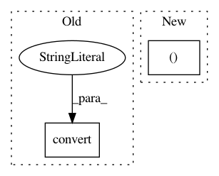

77c16db8bf8cbc0548e37b5b5622644c8e243e8b,waifu2x.py,,denoise_image,#Any#Any#Any#,16
Before Change
def denoise_image(src, model, cfg):
alpha = None
dst = src.convert("RGB")
if src.mode == "LA" or src.mode == "RGBA":
six.print_("Splitting alpha channel...", end=" ", flush=True)
alpha = src.split()[-1]
dst = iproc.alpha_make_border(dst, alpha, model.offset)
After Change
def denoise_image(src, model, cfg):
dst, alpha = split_alpha(src, model.offset)
six.print_("Level %d denoising..." % cfg.noise_level, end=" ", flush=True)
if cfg.tta:
dst = reconstruct.image_tta(
In pattern: SUPERPATTERN
Frequency: 4
Non-data size: 2
Instances
Project Name: tsurumeso/waifu2x-chainer
Commit Name: 77c16db8bf8cbc0548e37b5b5622644c8e243e8b
Time: 2018-02-24
Author: tsurumeso@gmail.com
File Name: waifu2x.py
Class Name:
Method Name: denoise_image
Project Name: tsurumeso/waifu2x-chainer
Commit Name: 035832c8fa5b2078c66d2833a15dc6582e43e142
Time: 2018-11-06
Author: tsurumeso@gmail.com
File Name: lib/iproc.py
Class Name:
Method Name: read_image_rgb_uint8
Project Name: wkentaro/labelme
Commit Name: a8b94863d2178d84b7e6c66eae38d0964eeca165
Time: 2020-07-13
Author: www.kentaro.wada@gmail.com
File Name: examples/instance_segmentation/labelme2coco.py
Class Name:
Method Name: main
Project Name: tsurumeso/waifu2x-chainer
Commit Name: 77c16db8bf8cbc0548e37b5b5622644c8e243e8b
Time: 2018-02-24
Author: tsurumeso@gmail.com
File Name: waifu2x.py
Class Name:
Method Name: upscale_image